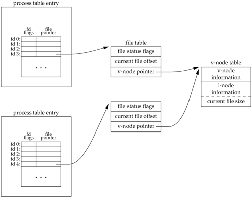

3.10. File Sharing
The UNIX System supports the sharing of open files among different processes. Before describing the dup function, we need to describe this sharing. To do this, we'll examine the data structures used by the kernel for all I/O.
The following description is conceptual. It may or may not match a particular implementation. Refer to Bach [1986] for a discussion of these structures in System V. McKusick et al. [1996] describes these structures in 4.4BSD. McKusick and Neville-Neil [2005] cover FreeBSD 5.2. For a similar discussion of Solaris, see Mauro and McDougall [2001].
The kernel uses three data structures to represent an open file, and the relationships among them determine the effect one process has on another with regard to file sharing.
Every process has an entry in the process table. Within each process table entry is a table of open file descriptors, which we can think of as a vector, with one entry per descriptor. Associated with each file descriptor are A pointer to a file table entry
The kernel maintains a file table for all open files. Each file table entry contains The file status flags for the file, such as read, write, append, sync, and nonblocking; more on these in Section 3.14 A pointer to the v-node table entry for the file
Each open file (or device) has a v-node structure that contains information about the type of file and pointers to functions that operate on the file. For most files, the v-node also contains the i-node for the file. This information is read from disk when the file is opened, so that all the pertinent information about the file is readily available. For example, the i-node contains the owner of the file, the size of the file, pointers to where the actual data blocks for the file are located on disk, and so on. (We talk more about i-nodes in Section 4.14 when we describe the typical UNIX file system in more detail.)
Linux has no v-node. Instead, a generic i-node structure is used. Although the implementations differ, the v-node is conceptually the same as a generic i-node. Both point to an i-node structure specific to the file system.
We're ignoring some implementation details that don't affect our discussion. For example, the table of open file descriptors can be stored in the user area instead of the process table. These tables can be implemented in numerous waysthey need not be arrays; they could be implemented as linked lists of structures, for example. These implementation details don't affect our discussion of file sharing.
Figure 3.6 shows a pictorial arrangement of these three tables for a single process that has two different files open: one file is open on standard input (file descriptor 0), and the other is open on standard output (file descriptor 1). The arrangement of these three tables has existed since the early versions of the UNIX System [Thompson 1978], and this arrangement is critical to the way files are shared among processes. We'll return to this figure in later chapters, when we describe additional ways that files are shared.

The v-node was invented to provide support for multiple file system types on a single computer system. This work was done independently by Peter Weinberger (Bell Laboratories) and Bill Joy (Sun Microsystems). Sun called this the Virtual File System and called the file systemindependent portion of the i-node the v-node [Kleiman 1986]. The v-node propagated through various vendor implementations as support for Sun's Network File System (NFS) was added. The first release from Berkeley to provide v-nodes was the 4.3BSD Reno release, when NFS was added.
In SVR4, the v-node replaced the file systemindependent i-node of SVR3. Solaris is derived from SVR4 and thus uses v-nodes.
Instead of splitting the data structures into a v-node and an i-node, Linux uses a file systemindependent i-node and a file systemdependent i-node.
If two independent processes have the same file open, we could have the arrangement shown in Figure 3.7. We assume here that the first process has the file open on descriptor 3 and that the second process has that same file open on descriptor 4. Each process that opens the file gets its own file table entry, but only a single v-node table entry is required for a given file. One reason each process gets its own file table entry is so that each process has its own current offset for the file.

Given these data structures, we now need to be more specific about what happens with certain operations that we've already described.
After each write is complete, the current file offset in the file table entry is incremented by the number of bytes written. If this causes the current file offset to exceed the current file size, the current file size in the i-node table entry is set to the current file offset (for example, the file is extended). If a file is opened with the O_APPEND flag, a corresponding flag is set in the file status flags of the file table entry. Each time a write is performed for a file with this append flag set, the current file offset in the file table entry is first set to the current file size from the i-node table entry. This forces every write to be appended to the current end of file. If a file is positioned to its current end of file using lseek, all that happens is the current file offset in the file table entry is set to the current file size from the i-node table entry. (Note that this is not the same as if the file was opened with the O_APPEND flag, as we will see in Section 3.11.) The lseek function modifies only the current file offset in the file table entry. No I/O takes place.
It is possible for more than one file descriptor entry to point to the same file table entry, as we'll see when we discuss the dup function in Section 3.12. This also happens after a fork when the parent and the child share the same file table entry for each open descriptor (Section 8.3).
Note the difference in scope between the file descriptor flags and the file status flags. The former apply only to a single descriptor in a single process, whereas the latter apply to all descriptors in any process that point to the given file table entry. When we describe the fcntl function in Section 3.14, we'll see how to fetch and modify both the file descriptor flags and the file status flags.
Everything that we've described so far in this section works fine for multiple processes that are reading the same file. Each process has its own file table entry with its own current file offset. Unexpected results can arise, however, when multiple processes write to the same file. To see how to avoid some surprises, we need to understand the concept of atomic operations.
|